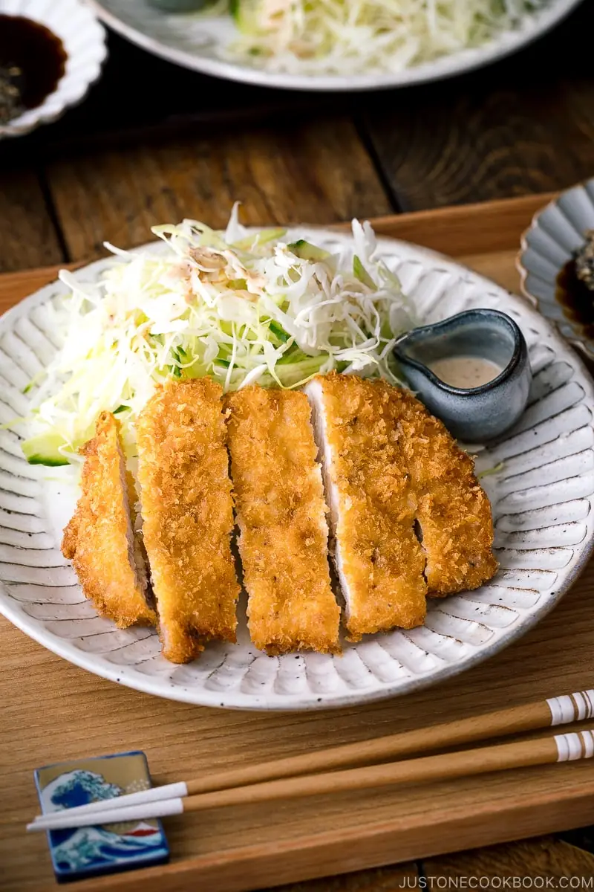

Tonkatsu (Pork Cutlet)
- Total time30 mins
- Serves2
- Ingredients14
- Steps25

Ingredients
For the shredded cabbage salad (optional)
- ¼ head green cabbage
- 1 Japanese or Persian cucumber
- 4 Tbsp Japanese sesame dressing
For the sesame dipping sauce
- 1 Tbsp toasted white sesame seeds
- 1 Tbsp toasted black sesame seeds
- 4 Tbsp tonkatsu sauce
For the breading
- ½ cup panko (Japanese breadcrumbs)
- 1 large egg
- ½ Tbsp neutral oil (for the egg)
- 2 Tbsp all-purpose flour (plain flour)
For the tonkatsu
- 2 boneless pork loin chops (½ inch thick)
- ½ tsp Diamond Crystal kosher salt
- ⅛ tsp freshly ground black pepper
- 3 cups neutral oil (for deep-frying)
Directions
- Gather all the ingredients. I highly recommend getting fresh panko (called nama panko) from a Japanese grocery store, if available. If you can’t get it, follow my instructions to make fresh panko. Make sure to use a Japanese brand of panko from Japan. Western “panko breadcrumbs” are a bit different from authentic Japanese panko.
To Prepare the Shredded Cabbage (optional)
- Tonkatsu is usually served with fresh shredded cabbage (optional) on the side. To prepare it, shred ¼ head green cabbage super thinly with a sharp knife or use a slicer; I love to use a cabbage slicer because it saves time and energy! I also thinly slice 1 Japanese or Persian cucumber diagonally, then cut the slices into thin strips. Toss the cabbage and cucumber together and set aside. Prepare 4 Tbsp Japanese sesame dressing (store-bought or homemade) and keep refrigerated until ready to serve in individual dressing cups.
To Make the Sesame Tonkatsu Dipping Sauce
- Grind 1 Tbsp toasted white sesame seeds and 1 Tbsp toasted black sesame seeds with a Japanese pestle and mortar. Leave some seeds unground for texture.
- Divide the ground sesame seeds among individual dipping plates or bowls. Then divide 4 Tbsp tonkatsu sauce (store bought or homemade) among the dipping plates. Set aside until ready to serve. Each person can mix it together when they are ready to eat. Note: In Japan, we often drizzle straight tonkatsu sauce on our cutlets without adding sesame seeds. Feel free to serve this dish with straight tonkatsu sauce instead, if you prefer.
To Prepare the Fresh Panko and Breading
- If you are using dry panko from the store, add ½ cup panko (Japanese breadcrumbs) to a deep dish and spray with water until the panko is moist. Set aside for 15 minutes, or until the panko becomes soft and tender. Optionally, you can make fresh panko by pulsing some shokupan (Japanese Pullman bread) in a food processor.
- Meanwhile, prepare the other breading ingredients. Crack 1 large egg (50 g each w/o shell) in a deep dish and add ½ Tbsp neutral oil. Whisk together until well combined. By adding oil, the meat and breading won’t detach from each other while deep-frying and the juice and flavor from the meat will not escape easily. Then, prepare another deep dish with 2 Tbsp all-purpose flour (plain flour).
To prepare the pork
- Use a sharp knife to remove and discard the extra fat from 2 boneless pork loin chops (½ inch thick). Then, make several slits on the connective tissue (white area) between the meat and fat. Tip: Red meat and fat have different elasticities, and when they are cooked, they will shrink and expand at different rates. These slits will allow the tonkatsu to stay nice and flat when deep-frying and prevent it from curling up.
- Flip the meat and make several slits on the other side of the connective tissue.
- Pound both sides of the meat with the back of a knife or a meat tenderizer/mallet.
- Mold the meat back into its original shape with your hands.
- Season both sides of the meat with ½ tsp Diamond Crystal kosher salt and ⅛ tsp freshly ground black pepper.
To Bread the Pork
- First, dredge the pork in the flour and dust off any excess. Excess flour will create a coating that prevents the egg mixture from adhering to the pork. Next, dip the pork into the egg mixture and coat well.
- Finally, dredge the pork in the fresh panko, gently pressing the panko onto the pork. Gently shake off any excess panko, then place the pork pieces onto a tray or plate. While deep-frying, the panko will “puff up,” so at this stage they don't have to be fluffy. Set it aside for 5-10 minutes so the breading will set.
To Deep-Fry: First Frying
- Add 3 cups neutral oil to the pot and bring it to 340ºF (170ºC) over medium heat. Make sure your oil is 1¾-2 inches (5 cm) deep in the pot. Tip: If you don't have a thermometer, stick a chopstick in the oil; you'll know the oil is hot enough when you see tiny bubbles start to appear around the tip. Alternatively, you can drop one piece of panko into the oil; if it sinks down to the middle of the oil and immediately pops back up to the surface, then the oil is ready.
- Gently put one piece of pork into the oil and cook for 1 minute (without flipping). Don't touch the pork for 30 seconds. Tip: Why one piece at a time? You don't want to reduce the oil temperature drastically. The size of the bubbles should be big when you add the pork. Keep watching the oil temperature and make sure it doesn't go over 340ºF (170ºC) or else the breading will get dark too quickly before the pork is done cooking, resulting in undercooked meat.
- After a minute, flip the pork and cook the other side for 1 minute.
- Take out the pork and remove excess oil by holding it vertically over the pot for a few seconds while the oil drips off. Place it on a wire rack or paper towel and let it sit for 4 minutes. The hot oil on the exterior will slowly continue to cook the meat as it sits.
- Turn off the heat temporarily and scoop up and discard any fried crumbs in the oil with a fine-mesh strainer. It's very important to keep the oil clean and crumb free so the oil does not get darker and dirtier with burnt crumbs. Turn on the heat and bring the oil back to 340ºF (170ºC).
- While the first cutlet is resting on the wire rack, deep-fry the second piece of pork for 1 minute without flipping. Remember not to touch it for 30 seconds.
- Flip and cook the other side for 1 minute.
- Take out the pork and remove the excess oil as before. Place it on the wire rack and let the residual heat cook the pork for 4 minutes. Scoop up and discard the fried crumbs in the oil with a fine-mesh strainer.
To Deep-Fry: Second Frying
- The first piece of pork should now be ready for its second frying. Bring the oil to 355ºF (180ºC) and fry the pork for 30 seconds on each side. Remove from the pot and drain the excess oil by holding the cutlet vertically over the wire rack or paper towels for 2 minutes. This prevents the breading from getting soggy on one side.
- Scoop up and discard the fried crumbs in the oil, then continue the second frying of the second cutlet. Remove from the pot and drain the excess oil as before.
To Serve
- Cut the tonkatsu into slices ¾ inch (2 cm) wide.
- Transfer to a plate and serve it with the shredded cabbage and cucumber, the sesame dressing in a small cup, and the sesame tonkatsu dipping sauce on the side.
Recipe credit: justonecookbook.com